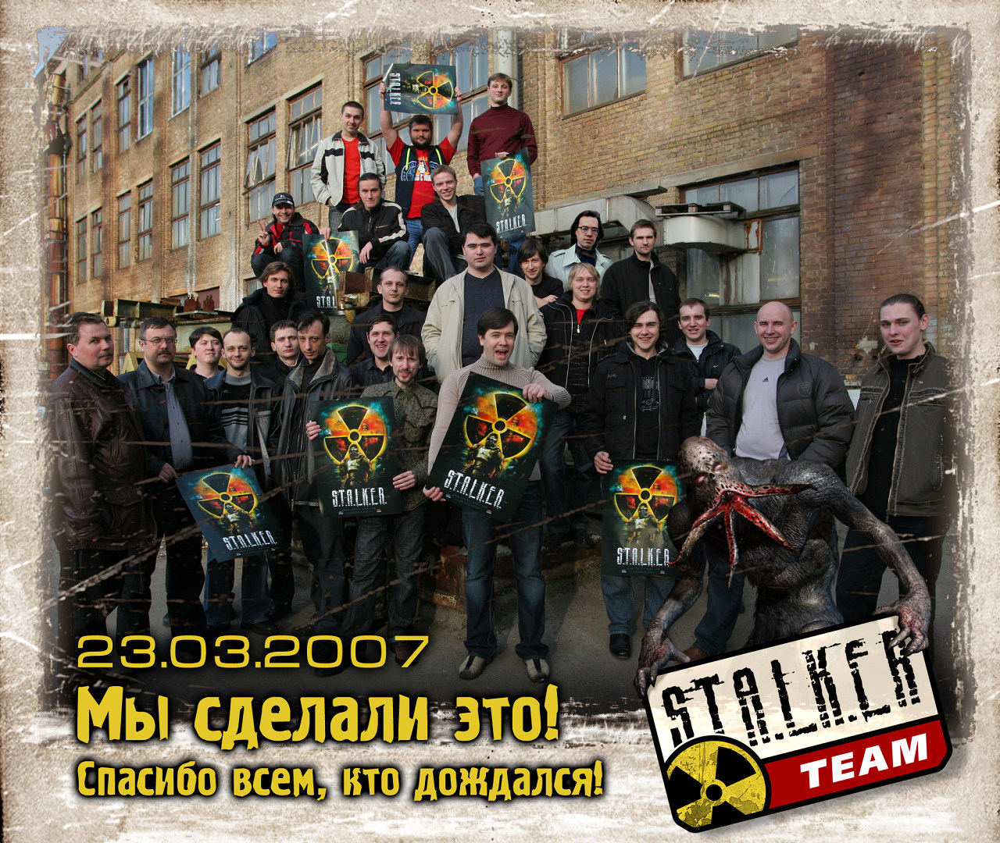
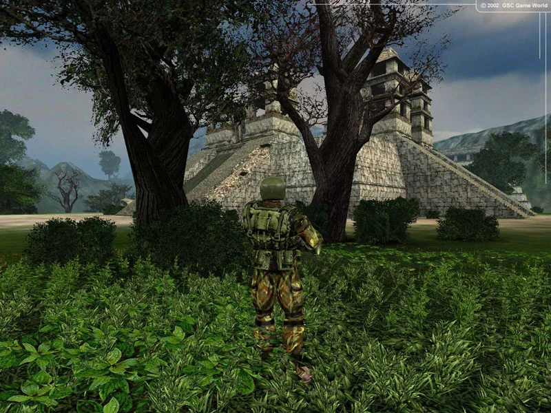
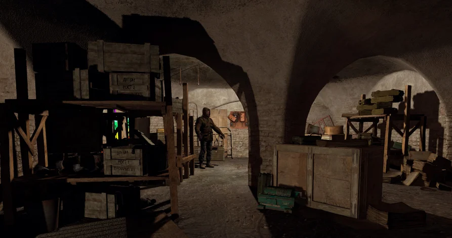
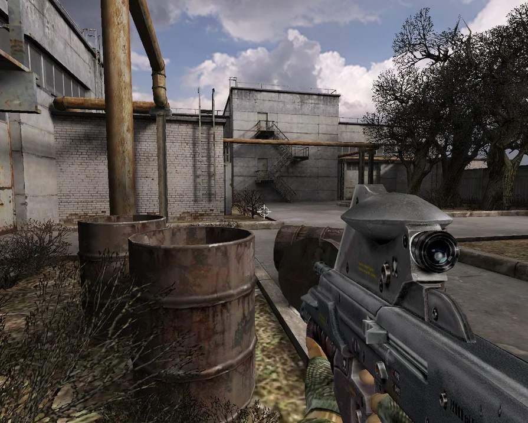

Ten years ago, in March 2007, the famous S.T.A.L.K.E.R.: Shadow of Chernobyl was released. In an ideal world today, we would have to play the second, or even the third part of the game, but S.T.A.L.K.E.R. did not have a full-fledged sequel. On the occasion of the tenth anniversary of S.T.A.L.K.E.R.: Shadow of Chernobyl, we decided to remember where the development of the game began and what difficulties its authors had to overcome.
Sergey Grigorovich has dreamed of getting rich since childhood. Already at school, he rented games brought from abroad to classmates, traded floppy disks and electronics on the radio market and diligently increased his savings. At the age of fifteen, he drew the logo of his company, and at sixteen, not without difficulty, he registered the company GSC Game World, using his own initials in the name (GSC — Grigorovich Sergey Konstantinovich). "At that time, I had a dream and a desire to succeed. Experience and money came with time," he recalls.
Grigorovich started with translations of games. Speaking in 2015 at the festival "Our whole life is a game", he said that hacking and transferring each took about four hundred dollars, but the net profit reached two thousand. Up to twenty-six pirated transfers were made per month. In parallel, the company was engaged in publishing all kinds of encyclopedias, training programs and children's games. Over time, each direction began to bring in half a million dollars a year, which in 1997 allowed the studio to be repurposed for the development of full-fledged computer games.
We decided to start with a quest: at first glance it seemed that in this genre you can quickly make a good game and then take on something more. Just at that time, the future head of S.T.A.L.K.E.R. development Andrey Prokhorov joined the team: "I was taken to GSC as a person who understands something about computer graphics and knows how to draw on paper. Since I drew mostly planes of the future, and the young Sergey Grigorovich tried to make a braid
It soon became clear that adventure games are not as simple a genre as it seems. In addition to creating a variety of locations, it was necessary to think through the script, write dialogues, and the team lacked experience in such matters. No one was satisfied with the result, and as a result, the idea with the quest was shallowed, switching to the strategy genre.
The first RTS studio was the non-commercial WarCraft 2000: Nuclear Epidemic. GSC Game World has created its own powerful engine and transferred the classic WarCraft 2 to it, making many changes to the game. "We hoped that Blizzard would be delighted with the game and entrust us with the development of WarCraft 3," recalls Sergey Grigorovich. Californians managed to demonstrate the project in 1999 at one of the exhibitions in Cannes. But Blizzard representatives were outraged that their game was hacked and reworked without permission. Without going into the mechanics improvements, they just got up and left the demonstration.
Then the studio decided to make an original strategy. So in 2000, the RTS "Cossacks: European Wars" appeared. "If we count in the box office, as it is done in cinema, the industry closest to us in structure and content, the series "Cossacks" brought about $ 100 million in revenue (without taxes — Ed.). And it still brings it," Sergey Grigorovich said in 2007. After the success of the Cossacks, the company felt the strength to embark on a creative adventure. It was the development of S.T.A.L.K.E.R..
Many probably remember that at first there was no "Stalker", Chernobyl, the Zone and other things were not even in the plans. GSC was preparing a shooter called Oblivion Lost ("Lost Oblivion") — an action adventure in the style of the movie "Stargate" with Kurt Russell. He talked about traveling through portals to different worlds: with special forces, robots, grenade launchers and wall-to-wall battles.

At that time, the team wanted to make the most massive action movie. But things didn't work out for GSC with the militants: in 2001, the Venom tactical shooter came out and did not meet expectations. Codename: Outbreak. The situation with Oblivion Lost was also alarming. "We were developing a game about the war of robots and aliens in the surroundings of the Aztec pyramids. But at every meeting, the phrase was constantly heard: "What we are doing is complete nonsense." And more and more new ideas were offered. This went on for almost a year," Grigorovich says.
In the end, the authors abandoned the idea of portals and numerous worlds. Such a game was too difficult to implement: it was necessary to create a dozen visually and ideologically different planets, and GSC lacked the budget and resources for such a volume of work. But then an important event happened — the studio completed the development of the X-Ray engine. "At that time it was the most beautiful engine in the world!" recalls Andrey Prokhorov. The capabilities of the engine prompted him to a new idea. Back during the development of Venom he offered to beat the theme of stalkers and the Strugatskys' "Roadside Picnic", but then it was decided that Venom would be sustained in the spirit of Heinlein's "Puppeteers". Now the team has picked up a setting with a Zone, artifacts and anomalies.
On March 27, 2002, the news appeared on the official website of GSC Game World that the game Oblivion Lost changed its name to S.T.A.L.K.E.R.: Oblivion Lost, and it is planned to release it in early 2003. And this was just the beginning: the development was delayed for five years.
Having decided on the theme, the developers decided to choose the Crimea as the place of action: according to the plot, the catastrophe would have occurred at the Crimean nuclear power plant. But Grigorovich felt that it was much more logical to take Chernobyl landscapes as a basis for game locations — especially since Chernobyl is already known all over the world.
In the following months, the team made several expeditions to Chernobyl. Thousands of photos were taken and dozens of hours of video were shot on those trips. The materials immediately went to work: artists and designers disassembled the frames and began to create a map, textures, levels and terrain details based on them. The team tried to visualize the oppressive atmosphere and appearance of the Chernobyl NPP and the exclusion zone as accurately as possible. Rusty machinery, abandoned villages with crooked huts, industrial zones with peeling paint, pyramidal poplars, faded grass — S.T.A.L.K.E.R. quickly acquired familiar outlines.
In parallel, GSC began to actively communicate with the press. In an interview, representatives of the studio promised everything: photorealistic graphics, "honest" physics, a huge open world, a complex simulation of the life of monsters and stalkers, anomalies, artifacts, controlled equipment, trade, factions, a quest system. Even a cooperative was planned. Without hesitation, the team compared their project with Elite, Fallout, Daggerfall and Deus Ex. It was an amazing example of ambition, audacious PR and to some extent zombie. And inside the studio, such bold phrases as "we will tear everyone up" and "we are making the best game of all time" were heard in relation to S.T.A.L.K.E.R.. "Half-Life 2 sucks," Andrei Prokhorov once told foreign journalists, and this phrase fully reflects the team's maximalism of that time.

It is not surprising that the whole world was soon talking about S.T.A.L.K.E.R.: Oblivion Lost. It was one of the three most anticipated shooters on a par with Half-Life 2 and Doom 3. Even Gabe Newell stated that he was extremely curious about the project of the Ukrainian company. Becoming on a par with high-budget Western long-term construction projects has already been a significant achievement. "Based on the reaction of fans around the world, we finally realized that we were absolutely right with the new concept of the game. A shaft of letters, fan sites, interviews. As many people say: "One morning we woke up famous,"" recalls one of the leaders of the development Anton Bolshakov.
The next two years passed relatively carefree for GSC Game World. The excitement around S.T.A.L.K.E.R. grew: detailed previews and reports appeared in the profile press. Players dreamed of an ideal role-playing shooter that would surpass the outlandish Half-Life 2 and Doom 3. The typical syndrome of inflated expectations made itself felt. In the meantime, the developers have tightened the graphics, implemented a simulation of A-life, conducted a number of confident demonstrations and signed a lucrative contract with THQ for the publication of the game.
Other publishers were also very interested in the novelty, but Grigorovich set conditions: all rights to the brand remain with him, plus the studio relies on a solid percentage of game sales. THQ agreed to all the requirements without much hesitation, asking only to replace the mysterious subtitle Oblivion Lost with something more understandable to the Western audience. So the game changed its name again, turning into the familiar S.T.A.L.K.E.R.: Shadow of Chernobyl.
It seems that the release is just around the corner, but then the constant postponements begin. The release date shifts to the end of 2003, then to 2004, and then completely changes to a vague "when everything is ready". S.T.A.L.K.E.R.: Shadow of Chernobyl has become a hostage of its own ambitions.
First of all, technology continued to evolve while development was underway, and GSC decided that the game should be completely transferred to the DX9 render. Difficulties also arose with the notorious A-life simulation system. In theory, it was great: monsters attacked each other and stalkers, stalkers in turn hunted monsters, traveled around the map, took on quests — in general, the Zone lived its own life for the amusement of the player. In practice, everything turned out to be more complicated. "Playtests have begun, and here an unpleasant surprise awaits us. On the one hand, we got an amazing feeling of the living world. On the other hand, they realized that a game without a plot sequence of events is unpredictable and uncontrollable from the point of view of game design. Then there were too many events, then nothing happened for a long time. There were often situations when it was unclear where to go and what to do next," says Anton Bolshakov.
The whole year 2005 was spent on alterations, pacification of A-life, design changes, rewriting the plot, but it still did not bring the release date closer. S.T.A.L.K.E.R.: Shadow of Chernobyl was too cumbersome and clumsy: it refused to work the way the team wanted. The players, tired of constant transfers, began to get angry and sarcastic. Doom 3 managed to come out, Half-Life 2 came out. Some joked that even Duke Nukem Forever would have time to hit store shelves before GSC Game World finished S.T.A.L.K.E.R..
In early 2006, THQ sent its representative, Dean Sharp, to the studio office, who told the team from the doorstep that it was time to finish. It was not an order, but only an opinion with which the developers agreed. "It's better for you to decide what is worth cutting out of the game than for me to do it," Sharpe stressed. So controversial and simply non-working elements began to be thrown out of S.T.A.L.K.E.R.: slow zombies, packs of rats, controlled equipment, individual locations, some types of weapons, anomaly detectors and much more. The simulation of life and the general nonlinearity have been greatly simplified. The list turned out to be quite large, and the remnants of many ideas were very clearly visible in the release version.

S.T.A.L.K.E.R.: Shadow of Chernobyl was released on March 20, 2007, five years after the official announcement. She managed to change the name, engine, concept several times and was completely transformed by the release. For the CIS countries, the Shadow of Chernobyl is a unique and iconic development that has become a symbol of an entire era of the domestic gaming industry. The project turned out to be good, but far from perfect. The authors, however, did not deny this. "Although I can't say that this is a Dream Game, as I saw it in 2002-2003, I am pleased with the result. And I agree with the rejection of some ideas at the end of development. Even in a stripped-down form, this is the most complex game in the FPS genre. Let it not be a game of all times and peoples, it will deservedly leave a noticeable mark in the gaming industry," Andrei Prokhorov reasoned after the release.
To bring S.T.A.L.K.E.R. in line with the dreams of the players, the developers, according to them, needed at least another year and a half of work, but they could not afford such a delay. To many ideas they returned in the addons to the game — "Clear Sky" and "The Call of Pripyat".
In the CIS, sales of S.T.A.L.K.E.R.: Shadow of Chernobyl amounted to about a million copies, and the game was well understood in the West. An accompanying literary series based on the motives was launched, and even a film adaptation loomed in the distant future. It seemed that the franchise had a big and very bright future. Grigorovich announced the production of S.T.A.L.K.E.R. 2, reported on the status of the project for some time, shared plans, and suddenly, without further ado, canceled all work on the game and dissolved the development department.
Subsequently, he explained his decision as follows: "While we were developing the second part, it became clear that this is a long-term project, it does not fit not only into the framework of my life, but also into financial costs." In his personal blog on Facebook, he also mentioned that the idea of publishing S.T.A.L.K.E.R. 2 does not seem profitable to him. However, in 2014, he allowed enthusiasts from the Hungarian Dezowave team to use the X-Ray engine in a free fashion for S.T.A.L.K.E.R.. "The creation of fan mods is not a consequence of the popularity of S.T.A.L.K.E.R., it is the reason why S.T.A.L.K.E.R. 2 will be born someday," Grigorovich said.